Viewing Coordinates
The Show Coordinates command displays the coordinates of the selected shape. To view coordinates of a shape, select it fully or partially. You can select a shape either before (pre-selection mode) or after (post-selection mode) you run the Show Coordinates command.
- Viewing Coordinates of a Shape
- Viewing Coordinates of All Vertices of a Shape
- Viewing Coordinates of Vertices of Multiple Shape
- Examples of Coordinates of Shapes
Viewing Coordinates of a Shape
To view the coordinates of a shape:
- In the layout window, choose View – Show Coordinates.
-
Select a rectangle as explained below:
-
Point at or select the complete shape: The coordinate information is displayed for the lower-left and top-right vertices of the rectangle, as shown in the figure below. Notice the diamond-shaped markers identifying the coordinate locations.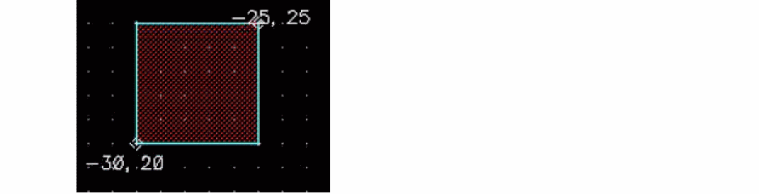
-
Point at or select a vertex: The coordinate information is displayed at the selected vertex of the rectangle, as shown in the figure below.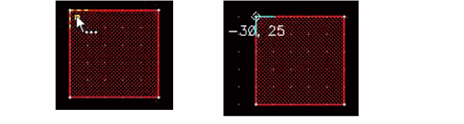
-
Point at or select an edge: The coordinate information is displayed at the two vertices of the selected edge of the rectangle, as shown in the figure below.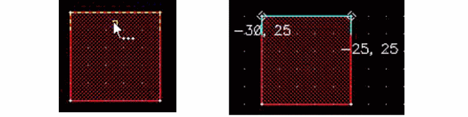
-
Point at or select the complete shape: The coordinate information is displayed for the lower-left and top-right vertices of the rectangle, as shown in the figure below. Notice the diamond-shaped markers identifying the coordinate locations.
Viewing Coordinates of All Vertices of a Shape
To view the coordinates of all the vertices of a selected shape:
-
Select a shape, say a polygon.
The coordinate information is displayed for one of the vertices, as shown in the figure below.
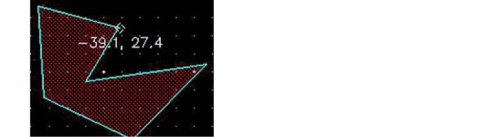 -
Press the spacebar to display the coordinates of the next vertex.
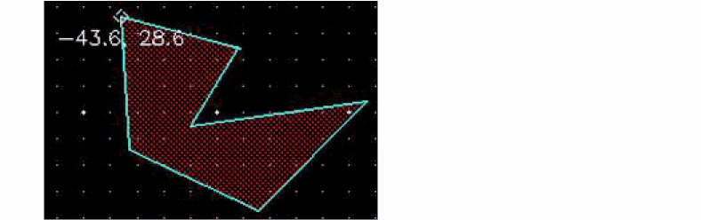You can continue to press the spacebar to view the coordinates of all the vertices in succession.
If you select a shape partially, only the coordinates of the selected vertices are displayed.
Viewing Coordinates of Vertices of Multiple Shape
To view the coordinates of the vertices when multiple shapes are selected:
-
Select multiple shapes, say a rectangle, a path, and the edge of a polygon.
The coordinates are displayed for each shape in the selected set one by one, for example, for the selected edge of the polygon, as shown in the figure below.
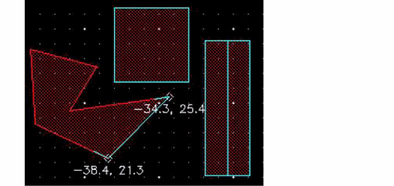 -
Press the spacebar again to view the next set of coordinates—lower-left and upper-right vertices of the rectangle, as shown in the following figure.
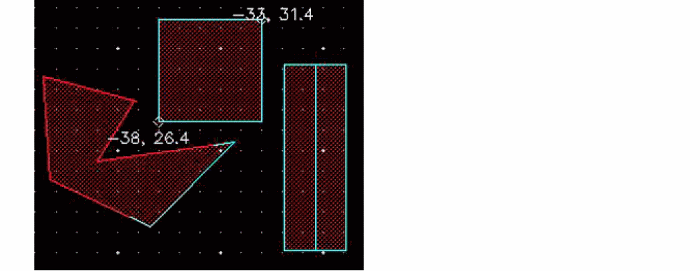 -
Continue to press the spacebar to view the remaining sets of coordinates.
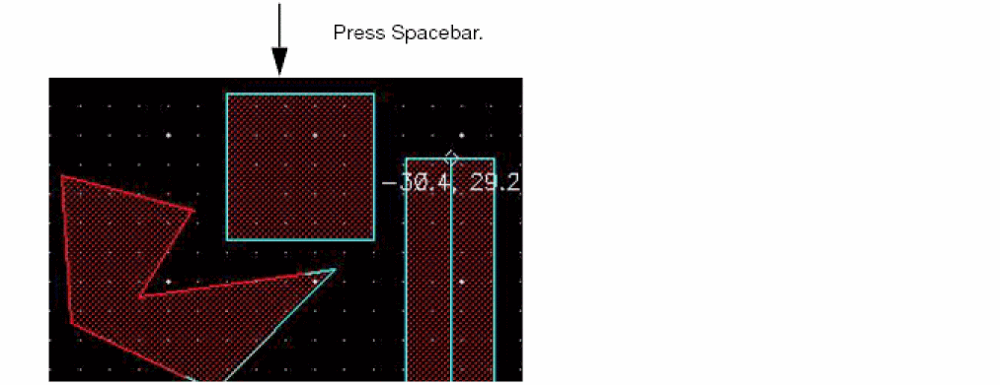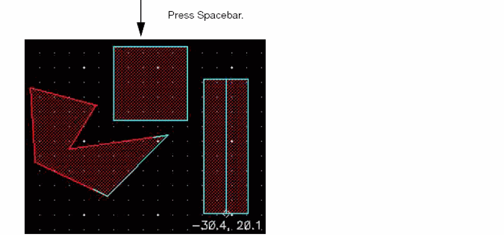 -
Press
Escto finish the command.
If you first run the Show Coordinates command and then select the required shapes, you can repeatedly cycle over the coordinates by pressing the spacebar. On the other hand, if you first select the required shapes and then run the Show Coordinates command, the command exits after cycling through all the coordinates once.
Examples of Coordinates of Shapes
The following table shows examples of coordinates displayed for various shapes:
|
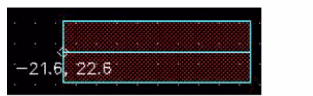
|
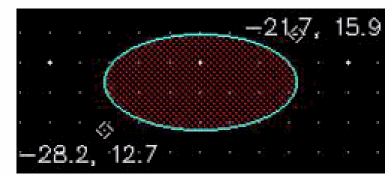
|
|
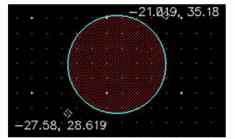
|
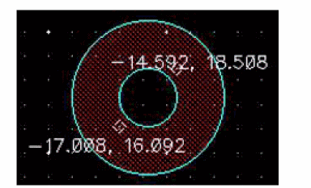
|
Circles and ellipses have two sets of coordinates, one for the bounding box and one for the center point.
Rectangles, paths, labels, and vias too have only one set of coordinates. Selecting a label, or via fully or partially displays the same set of coordinates, that of their respective origins. Selecting an instance displays the lower-left and upper-right coordinates of the bounding box, and after you press the spacebar the origin is displayed.
A donut has three sets of coordinates—one each for its two bounding boxes and one for the center point—as shown in the figures below.
You can control the font size and color of the coordinates displayed by using the Dynamic Measurement tab of the Dynamic Display form.
Related Topics
Return to top